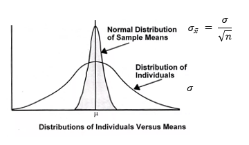
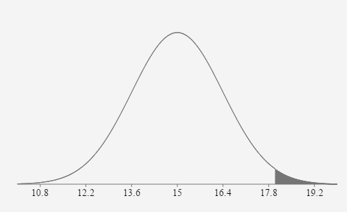
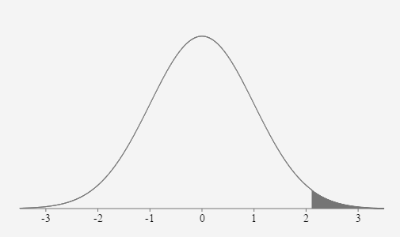
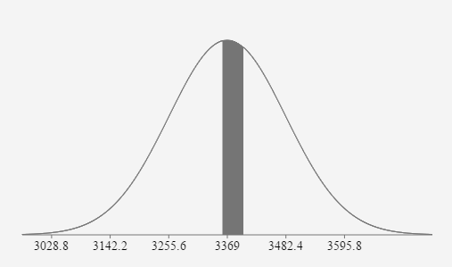
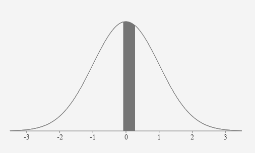
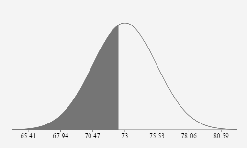
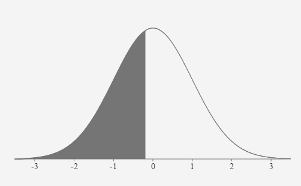
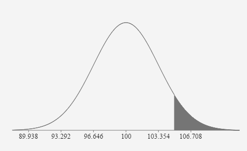
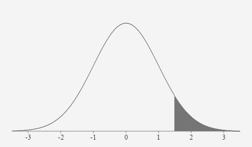

Unit 3 Normal Distributions and Confidence Intervals
5.4 Sampling Distributions and the Central Limit Theorem
Central Limit Theorem Normal Bell Curve: a distribution of sample means
The Central Limit Theorem states that the sampling distribution of sample means approaches a normal distribution as the sample size gets larger — no matter what the shape of the population distribution. This fact holds especially true for sample sizes over 30. All this is saying is that as you take more samples, especially large ones, your graph of the sample means will look more like a normal distribution.
https://www.statisticshowto.datasciencecentral.com/probability-and-statistics/normal-distributions/central-limit-theorem-definition-examples/The Central Limit Theorem is used when calculating the probability from a distribution of sample means. Each sample consists of n elements randomly selected from the population. The mean of each sample is one element in this new distribution.
If the sample meets the requirements: Sample is from a normally distributed population OR Sample size is greater than 30 (n > 30), use the Central Limit Theorem. The distribution of the sample means will be normally distributed.
When you use the CLT for your calculations, the distribution of the sample means uses the population mean and an adjusted standard deviation. The new standard deviation is dependent on the population standard deviation and the sample size. The CLT standard deviation will always be less than the population standard deviation.
\(\sim \mathbf{N}\left(\mu, \frac{\sigma}{\sqrt{n}}\right)\) \(z_{x}=\frac{\overline{x}-\mu}{\left(\frac{\sigma}{\sqrt{n}}\right)}\)
Requirements for CLT:
Sample is from normally distributed population OR Sample size is greater than 30 (n > 30)
- The mean amount of cash students at Pellissippi carry in their pocket is $15.00 and the standard deviation is $9.00. If 40 students are randomly selected, what is the probability the mean amount of cash in their pocket is greater than $18.00?
We can adjust the standard deviation and use the CLT because
the sample size is greater than 30 and this is a distribution of means. \(\mu = \)
15 dollars \(\sigma = \) \(\frac{9}{\sqrt{40}} \approx 1.4\) dollars \(z_{18.00}=\frac{18.00-15.00}{\left(\frac{9}{\sqrt{40}}\right)}=2.108185 \approx 2.11\) \(P(\overline{x}>18.00)=P(z>2.11)=0.0175\)


If 40 students are randomly selected, the probability their mean amount of cash in their pockets is greater than $18.00 is approximately equal to 0.0175 or 1.75%.
- Birth weights in the United States have a distribution that is approximately normal with a mean of 3369g and a standard deviation of 567g (American Journal of Epidemiology). If 25 babies are randomly selected, find the probability that their mean birth weight is between 3360g and 3400g.
We can adjust the standard deviation and use the CLT because
the population is normally distributed and it is a distribution of means. \(\mu = \)
3369 \(\sigma = \) \(\frac{567}{\sqrt{25}}=113.4\) \(z_{3360}=\frac{3360-3369}{113.4} \approx-0.0794\) \(z_{3400}=\frac{3400-3369}{113.4} \approx 0.2734\) \(P(3360 \lt x \lt 3400)=P(-0.08 \lt z \lt 0.27)=0.1393\)


If 25 babies are randomly selected, the probability their mean birth weight is between 3360g and 3400g is approximately equal to 0.1393 or 13.93%.
- Pulse Rates of adult men are normally distributed with a mean of 73 bpm and a standard deviation of 8 bpm. If 10 adult males are randomly selected, what is the probability their mean pulse rate will be less than 72.5 bpm.
We can adjust the standard deviation and use the CLT because
the population is normally distributed and it is a distribution of means. \(\mu = \)
73 bpm \(\sigma = \) \(\frac{8}{\sqrt{10}} \approx 2.53 \text{ bpm}\) \(z_{72.5}=\frac{72.5-73}{\left(\frac{8}{\sqrt{10}}\right)} \approx-0.1976\) \(P(\overline{x} \lt 72.5)=P(z \lt -0.1976)=0.4217\)


If 10 adult males are randomly selected, the probability their mean pulse rate is less than 72.5 bpm is approximately equal to 0.4217 or 42.17%.
- The distribution of IQ scores is normally distributed with a mean of 100 and a standard deviation of 15. If 20 IQ scores are randomly selected, what is the probability the mean score will be greater than 105?
We can adjust the standard deviation and use the CLT because
the population is normally distributed and it is a distribution of means.\) \(\mu = \)
100 \(\sigma = \) \(\frac{15}{\sqrt{20}} \approx 3.354\) \(z_{105}=\frac{105-100}{\left(\frac{15}{\sqrt{20}}\right)} \approx 1.4907\) \(P(\overline{x}>105)=P(z>1.4907)=0.0680\)


If 20 IQ scores are randomly selected, the probability their mean value will be greater than 105 is approximately equal to 0.0680 or 6.8%.